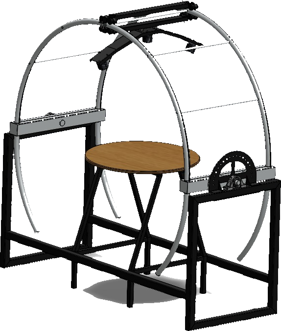

Ubicaciones
1 · Elija el país
2 · Elija la fecha
Fechas clave (solsticios y equinoccios)
Resultados
- País
- —
- Ciudad
- —
- Latitud
- —
- Fecha
- —
- Día n°
- —
- Temp.
- —
Inclinación del anillo por estación
La fórmula
Ejemplo con su selección
—
Cambie el país o la fecha en Ubicaciones y todos los números de esta página se recalculan.
¿Por qué sale este ángulo? La idea
Número del día del año n
Contamos los días desde el 1 de enero. Es el mismo conteo que hace el programa.
Declinación solar δ
Es la latitud donde el Sol cae exactamente vertical al mediodía ese día. Se calcula con la ecuación de Cooper:
Inclinación del anillo θ
Es la diferencia entre la latitud del lugar φ (Sur negativa, Norte positiva) y la latitud donde está el Sol δ.
Altura del Sol sobre el horizonte α
Si el anillo se inclina θ desde la vertical, el Sol está a 90° − θ sobre el horizonte.
Así se ve en la Tierra
Los rayos del Sol llegan paralelos. Donde caen verticales está la latitud δ. En la ciudad elegida, la línea blanca apunta al cenit (justo arriba de la cabeza); el ángulo naranja θ entre el cenit y el Sol es lo que inclinamos el anillo.
¿Por qué cambia durante el año?
El eje de la Tierra está inclinado 23,45°. Mientras la Tierra da la vuelta al Sol, el lugar donde el Sol cae vertical se mueve entre dos líneas:
- 21 de junio: el Sol está vertical sobre el Trópico de Cáncer (δ = +23,45°).
- 21 de marzo y 23 de septiembre (equinoccios): sobre el ecuador (δ = 0°).
- 21 de diciembre: sobre el Trópico de Capricornio (δ = −23,45°).
Por eso, para un mismo lugar, el ángulo del anillo cambia cada día. Cuanto más lejos está el lugar de la latitud del Sol, más inclinado llega el Sol y más se inclina el anillo.
La ecuación de Cooper es una aproximación muy usada en ingeniería solar; su error es de alrededor de 1°, suficiente para un heliodón.
Regla del lado (Norte o Sur)
- Si φ − δ es positivo, el Sol está al Sur del cenit → el anillo se inclina hacia el Sur.
- Si es negativo, el Sol está al Norte → el anillo se inclina hacia el Norte.
- Si la diferencia es menor a 0,5°, el programa deja el anillo vertical (0°), porque en la práctica no se ajusta con más precisión.
Glosario rápido
- Latitud (φ)
- Qué tan al Norte o al Sur del ecuador está un lugar. Cochabamba: 18° S.
- Declinación (δ)
- Latitud donde el Sol está justo arriba al mediodía ese día.
- Cenit
- El punto del cielo justo encima de nuestra cabeza.
- Solsticio
- Los días en que el Sol llega más al Norte (21/06) o más al Sur (21/12).
- Equinoccio
- Los días en que el Sol está sobre el ecuador (21/03 y 23/09).
- Hemisferio
- Mitad Norte o mitad Sur de la Tierra. Las estaciones están invertidas entre ambas.
El heliodón

¿Qué es un heliodón?
Es una máquina que imita la posición del Sol para cualquier lugar y fecha. Así podemos ver, en pequeño, cómo llega la luz y dónde caen las sombras sin esperar meses a que cambie la estación.
Nuestro heliodón
El heliodón que se expone fue fabricado en el PDTF, el Programa de Desarrollo de Tecnologías de Fabricación de la Universidad Mayor de San Simón.
El proyecto fue diseñado por estudiantes de Ingeniería Electromecánica, Ingeniería Mecánica e Ingeniería en Energías de la UMSS.
- Anillo metálico: sostiene el foco y se inclina hacia el Norte o el Sur.
- Foco y su soporte: el foco representa al Sol; se enciende desde la computadora.
- Transportador graduado: en el eje del anillo, para leer los grados de inclinación.
- Mesa central: aquí va la maqueta (una casa, un edificio, un panel solar…).
- Estructura de tubo: soporta todo y mantiene el anillo firme.
Pruébelo: mueva el anillo
Deslice para inclinar el anillo y vea cómo cambia la posición del Sol y la sombra de la casa.
Entendiendo los grados
- 0°: el anillo está vertical; el Sol está justo encima (en el cenit). Casi no hay sombra.
- 30°: el Sol está algo inclinado; las sombras son cortas.
- 60°: el Sol está bajo; las sombras son largas, como en invierno en Madrid.
- Cerca de 90°: el Sol está casi en el horizonte, como en Oslo en diciembre (unos 83°).
¿Hacia el Norte o hacia el Sur? El anillo siempre se inclina hacia el lado donde está el Sol al mediodía. En Cochabamba casi todo el año el Sol del mediodía está hacia el Norte, así que el anillo se inclina al Norte. Solo entre noviembre y fines de enero el Sol pasa al lado Sur. En España y Noruega, que están en el hemisferio Norte, el Sol del mediodía siempre está hacia el Sur.
Por eso, antes de mover el anillo, el heliodón se orienta con una brújula: un lado mirando al Norte y el otro al Sur.
Cómo será la exposición
- Elegimos un país y una fecha en el programa (o en esta app).
- El programa calcula el ángulo del anillo y hacia qué lado (Norte o Sur).
- Orientamos el heliodón Norte–Sur e inclinamos el anillo esos grados usando el transportador.
- La computadora enciende el foco a través del Arduino.
- Miramos la luz y las sombras sobre la maqueta: así se vería ese lugar a mediodía ese día.
¿Para qué sirve un heliodón?
Decidir dónde poner ventanas y aleros para que la casa reciba sol en invierno y sombra en verano.
Ver qué sombras hará un edificio nuevo sobre las casas y plazas vecinas.
Ubicar paneles solares y termas donde no les caiga sombra en todo el año.
Diseñar invernaderos y saber cuánta luz recibirán los cultivos.
Explicar las estaciones, los solsticios y los equinoccios de forma visual.
Usos en Bolivia
- Viviendas del altiplano (El Alto, Oruro, Potosí): orientar ventanas y muros para que el sol caliente las casas en las noches frías.
- Invernaderos andinos, como los walipinis semienterrados del altiplano: calcular cómo entra el sol en cada época.
- Paneles solares y termas en Cochabamba y otras ciudades: elegir la inclinación y evitar sombras.
- Plantas solares del país, como las de Uyuni y Oruro: entender cómo cambia el sol a lo largo del año.
- Escuelas y postas de salud rurales: diseñar aulas iluminadas y abrigadas aprovechando el sol.
- Carreras de Arquitectura e Ingeniería: probar maquetas antes de construir.
Cómo funciona el sistema
El programa en Python
El programa es como una calculadora con control remoto. Le decimos un país y una fecha, y con las fórmulas de la pestaña Fórmula calcula cuántos grados hay que inclinar el anillo. Después, por el cable USB, le "dice" al Arduino que encienda el foco.
Si el Arduino no está conectado, el programa igual calcula todo (modo simulación), pero no enciende el foco real.
Los detalles para quien quiera saber más:
- Tiene una ventana hecha con Tkinter con tres pestañas: Manejo Libre, Ubicaciones y Apagado Total.
- Con el país y la fecha calcula n, la declinación δ (ecuación de Cooper) y el ángulo θ del anillo: los mismos pasos de la pestaña Fórmula.
- Con la librería pyserial envía órdenes de texto por USB (9600 baudios):
R1para encender yOFFpara apagar. - Al abrirse busca el Arduino solo: le manda
PINGy espera la respuestaPONG.
def declinacion_solar(n):
"""Ecuacion de Cooper."""
ang = (360.0 / 365.0) * (284 + n)
return 23.45 * math.sin(math.radians(ang))
def inclinacion_anillo(lat, decl):
d = lat - decl
if abs(d) < 0.5:
return 0.0, ""
return abs(d), ("Sur" if d > 0 else "Norte")El Arduino y el relé
El Arduino es una pequeña computadora que vive en el heliodón. Espera órdenes de la PC: cuando le llega "encender", activa el relé.
El relé es un interruptor que se mueve solo: es como un dedo que aprieta el interruptor de la luz. Así, una señal pequeña y segura de 5 V puede prender el foco de 220 V que hace de Sol.
Los detalles para quien quiera saber más:
- Una placa Arduino UNO recibe las órdenes de la computadora por el cable USB.
- Cuando llega
R1, pone en LOW el pin 4. El módulo de relés es activo en bajo: con LOW el relé se cierra y el foco se enciende. - Con
OFFpone el pin en HIGH: el relé se abre y el foco se apaga. - El relé permite que una señal pequeña de 5 V controle el foco de 110/220 V sin peligro para el Arduino.
else if (cmd == "R1") {
apagarTodos(); activarCanal(1); // pin 4 en LOW -> foco encendido
Serial.println(F("OK R1"));
}⚠️ Seguridad: el foco trabaja con 110/220 V. Las conexiones se hacen con el sistema desenergizado y por personal calificado.
Heliodón fabricado en el PDTF (Programa de Desarrollo de Tecnologías de Fabricación).
Diseñado por estudiantes de Ingeniería Electromecánica, Ingeniería Mecánica e Ingeniería en Energías.